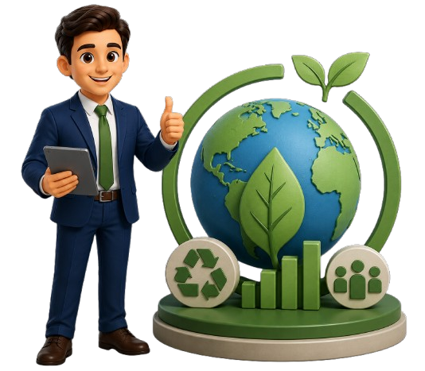

Where science meets sustainable engineering
SIEC turns environmental risk into measurable strategy — assessment, remediation, and climate advisory for organizations building responsibly.
Who We Are
At a Glance
SIEC is a global environmental consultancy that combines scientific rigor with practical know‑how. We help businesses, governments, and communities navigate complex environmental challenges — from site remediation and regulatory compliance to long‑term sustainability strategy.
Multidisciplinary Expertise
Ecologists, engineers, policy experts & data scientists working together.
Global Reach, Local Impact
Serving 40+ countries with deep regional knowledge and networks.
Science‑Led Solutions
Data-driven strategies that deliver measurable environmental outcomes.
Innovation
Pushing boundaries
Global
40+ countries
Our Comprehensive Services
Comprehensive
Environmental
Solutions
From assessment to implementation, end‑to‑end environmental consulting tailored to your needs.
Environmental Impact Assessment
Comprehensive assessments to identify, predict, and evaluate environmental impacts of proposed projects.
Sustainability Consulting
Strategic sustainability planning, ESG reporting, and carbon footprint reduction strategies for organizations.
Climate Change & Carbon
Climate risk assessment, carbon offsetting, and net‑zero transition planning for businesses and governments.
Leading sustainable consulting
Combining scientific expertise with practical, client-centric approaches to deliver measurable environmental impact.
Environmental integrity first
Embedding sustainability in every aspect of business and society for a healthier, more resilient future.
Why Choose SIEC
Expertise and Experience
Extensive experience across energy, infrastructure, and manufacturing sectors.
Innovation and Customization
Practical, cost-effective solutions tailored to your specific needs.

Sustainability Focus
Minimizing environmental impact while enhancing efficiency.
Reliable and Timely
High-quality results delivered on time, every time.

Ready to Make a
Sustainable Impact?
Partner with SIEC to create environmental solutions that drive meaningful change.